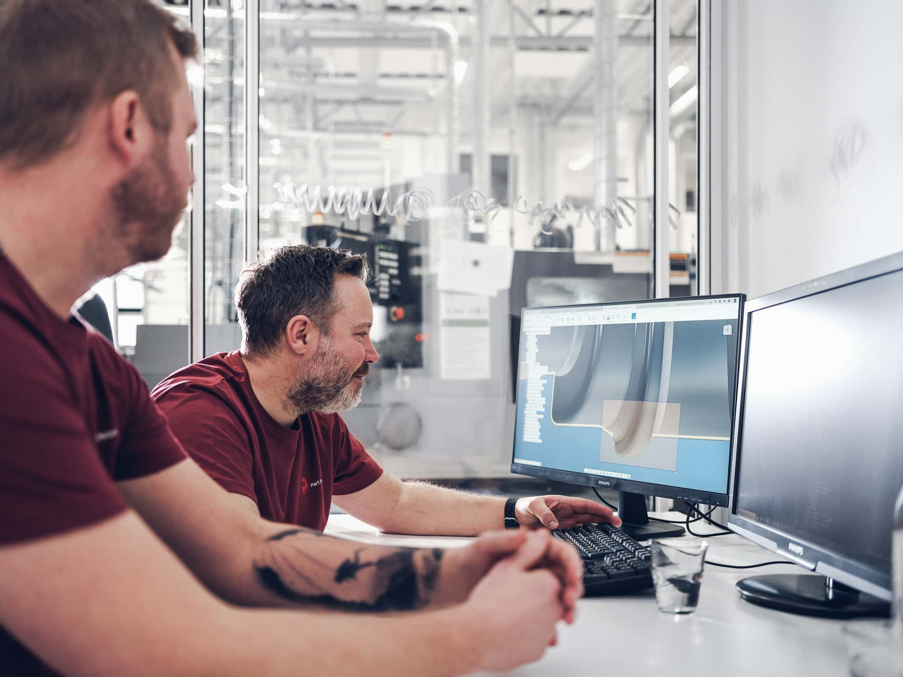

partprecision.se
partprecision.se
Precisionskomponenter
för medicinteknik
och industri
Part Precision grundades 2011 i Mariestad av ingenjörer med många års erfarenhet från den
medicinska sektorn. Vi tillverkar komponenter efter kundens ritningar – från prototyp och förserie till
etablerad serieproduktion.
ISO 13485:2016Certifierat kvalitetsledningssystem
FDA-registreradeTillverkare av klass 3-produkter
Renrum klass 8Validerad rengöring och packning

Från ritning till serieproduktion
Material, toleranser och kvalitetskrav i kundens ritning styr hur vi planerar och genomför
tillverkningen av varje komponent.
Med från första prototypen
Många uppdrag börjar med en prototyp eller förserie. Innan produktionen startar gör vi en
riskanalys och en DFM-genomgång (design for manufacturing) av komponenten. Ju tidigare vi kommer in
i projektet, desto effektivare blir tillverkningen.
Samma kvalitetssystem hela vägen
Prototyp, förserie och serieproduktion följer samma kvalitetsledningssystem. Mätning och kontroll
sker enligt dokumenterade rutiner som anpassas efter produktens krav, och spårbarheten är en del av arbetet.
Återkoppling på konstruktionen
Vi ger återkoppling på komponenten och kan ofta föreslå förbättringar av produkt och process – för
rätt kvalitet i rätt tid och till rätt pris.

Tjänster och material
- Bearbetning
- Svarvning, fräsning och EDM
- Märkning och fogning
- Lasermärkning och lasersvetsning
- Ytbehandling
- Elpolering, anodisering och passivering
- Material
- Titan, rostfritt stål, plast och andra metallegeringar
- Rengöring och packning
- Validerad rengöringsprocess och packning i renrum klass 8
Fem affärsområden
Vi tillverkar komponenter åt företagskunder över hela världen, inom medicinteknik och
industriell precisionsmekanik.
Ryggkirurgi
Komponenter för cervikala och thorakolumbala ryggradssystem. Maskinparken är optimerad för de
komplexa geometrier som ryggkirurgiska implantat kräver.
Käkkirurgi
Skruvar, distanser, abutments, instrument och implantat för dentala tillämpningar.
Ortopedi
Ett brett sortiment av ortopediska implantat för behandling av benbrott.
Hörhjälpmedel
Komponenter till benförankrade hörhjälpmedel.
Precisionsmekanik
Finmekaniska komponenter för industriella tillämpningar, från prototyp till serie.
Certifierade och registrerade för medicinteknik
ISO 13485:2016
Certifierat kvalitetsledningssystem för medicintekniska produkter.
FDA, USA
Registrerade som tillverkare av klass 3-produkter.
Japan
Registrerade som utländsk medicinteknisk tillverkare.
Berätta om er komponent
Skicka ritning eller specifikation tillsammans med material, ungefärliga volymer och tidplan.
Då kan vi redan i första samtalet diskutera ett konkret tillverkningsupplägg.
Alla kontaktpersoner
We create quality of life